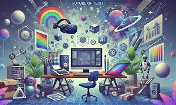

Here Research and Innovation is one of our strategic pillars in the academic vision. As a renowned center of excellence in both teaching and research, we are committed to fostering a culture of innovation and advancing knowledge in various fields. Our focus areas for research encompass Education and Learning, Business, Governance and Entrepreneurship, Innovation and Technology, Natural Resources and Climate Action, as well as Green and Creative Economy. With state-of-the-art facilities and unwavering support for research and extension services, we aim to drive impactful discoveries and contribute to the advancement of society.

We are the leading Institution in the country .we offer the best facilities in our region.we also0 offer jobs to well perfomed students hence we have a student friendly faculty.This department is one of our best .we will be hosting a academical visit each month bfor more insight
Our IT department goes beyond traditional learning to immerse students in the fast-paced world of modern technology. Whether you want to master software development, understand cybersecurity, or build hands-on problem-solving skills, our program provides the tools, guidance, and real-world experience needed to thrive in a digital future. By joining our community, you aren't just learning how computers work—you are gaining the creative and technical power to shape tomorrow.